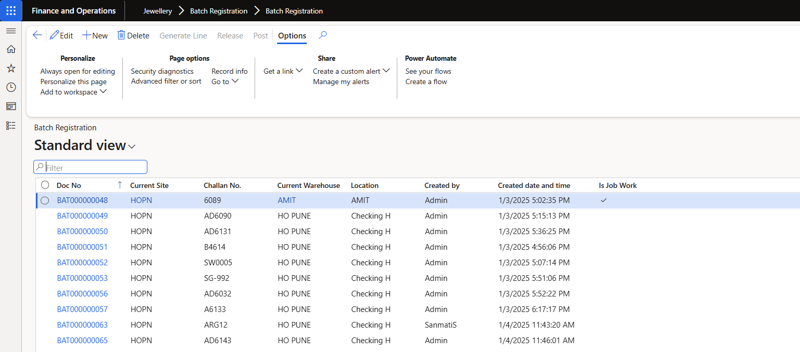

Tests
11 test(s) passed
2 test(s) failed, 0 others
Steps
50 step(s) passed
3 step(s) failed, 44 others
Tests
-
Setup Thursday, March 27, 2025, 02:34 PM "("IST")" passThursday, March 27, 2025, 02:34 PM "("IST")" Thursday, March 27, 2025, 02:34 PM "("IST")" 0h 0m 5s+371ms
Status Timestamp Details info_outline 2:34:53 PM Working On : https://d365-dev3385637a5c3f458893devaos.axcloud.dynamics.com/?cmp=CSPL&mi=DefaultDashboard URL. -
TC_07 Thursday, March 27, 2025, 02:35 PM "("IST")" passThursday, March 27, 2025, 02:35 PM "("IST")" Thursday, March 27, 2025, 02:38 PM "("IST")" 0h 3m 28s+547ms
Verify Making No field_ Making Item No should editable-Gold
EditStatus Timestamp Details check_circle 2:38:28 PM The Making Item No is changed and field is editable. check_circle 2:38:28 PM info_outline 2:38:30 PM The Making Item No is changed and field is editable. -
TC_16 Thursday, March 27, 2025, 02:38 PM "("IST")" passThursday, March 27, 2025, 02:38 PM "("IST")" Thursday, March 27, 2025, 02:41 PM "("IST")" 0h 3m 24s+177ms
Verify Making No field_ Making Item No should editable-Silver
EditStatus Timestamp Details check_circle 2:41:56 PM The Making Item No is changed and field is editable. check_circle 2:41:56 PM info_outline 2:41:58 PM The Making Item No is changed and field is editable. -
TC_25 Thursday, March 27, 2025, 02:42 PM "("IST")" passThursday, March 27, 2025, 02:42 PM "("IST")" Thursday, March 27, 2025, 02:45 PM "("IST")" 0h 3m 23s+774ms
Verify Making No field_Making Item No should editable-Platinum
EditStatus Timestamp Details check_circle 2:45:23 PM The Making Item No is changed and field is editable. check_circle 2:45:23 PM info_outline 2:45:25 PM The Making Item No is changed and field is editable. -
Tc_34 Thursday, March 27, 2025, 02:45 PM "("IST")" passThursday, March 27, 2025, 02:45 PM "("IST")" Thursday, March 27, 2025, 02:48 PM "("IST")" 0h 3m 28s+851ms
Verify Making No field_ Making Item No should editable-Diamond Jewellery
EditStatus Timestamp Details check_circle 2:48:49 PM The Making Item No is changed and field is editable. check_circle 2:48:49 PM 
info_outline 2:48:50 PM The Making Item No is changed and field is editable. 
check_circle 2:48:57 PM CASE PASSED IS : validateMakingItemNoEditableOrNot -
TC_06,TC_05 Thursday, March 27, 2025, 02:48 PM "("IST")" passThursday, March 27, 2025, 02:48 PM "("IST")" Thursday, March 27, 2025, 02:52 PM "("IST")" 0h 3m 53s+207ms
1.Verify PMC tab in batch registration_HallMarking entry should be correctly auto reflected in PMC tab-Gold 2.Navigation of batch registration
ViewStatus Timestamp Details info_outline 2:49:09 PM Navigation Provisonal Parcel Page Sucessfully info_outline 2:51:37 PM PO check page is open sucessfully check_circle 2:52:02 PM Expected PO User : : 0001
Actual PO User : : 0001info_outline 2:52:26 PM Verify that navigating sucessfully of Batch registration using following Path Jewellery>>Batch Registration 
check_circle 2:52:26 PM Verify that navigating sucessfully of Batch registration using following Path Jewellery>>Batch Registration check_circle 2:52:26 PM check_circle 2:52:45 PM Expected Making Item No. : HM
Actual Making Item No. : HMinfo_outline 2:52:47 PM Making Item No is correctly displayed 
check_circle 2:52:47 PM Expected ItemCategory : Hallmarking
Actual ItemCategory : Hallmarkinginfo_outline 2:52:48 PM Item category is correctly displayed 
check_circle 2:52:48 PM Expected Pcs : 250
Actual Pcs : 250info_outline 2:52:49 PM Pcs is correctly displayed check_circle 2:52:50 PM Expected MakingRate : 45.000
Actual MakingRate : 45.000info_outline 2:52:51 PM Making Rate is correctly displayed 
-
TC_15,TC_14 Thursday, March 27, 2025, 02:52 PM "("IST")" failThursday, March 27, 2025, 02:52 PM "("IST")" Thursday, March 27, 2025, 02:56 PM "("IST")" 0h 3m 52s+832ms
1.Verify PMC tab in batch registration_HallMarking entry should be correctly auto reflected in PMC tab-Silver 2.Navigation of batch registration
ViewStatus Timestamp Details info_outline 2:53:05 PM Navigation Provisonal Parcel Page Sucessfully info_outline 2:55:32 PM PO check page is open sucessfully check_circle 2:55:58 PM Expected PO User : : 0001
Actual PO User : : 0001info_outline 2:56:22 PM Verify that navigating sucessfully of Batch registration using following Path Jewellery>>Batch Registration 
check_circle 2:56:22 PM Verify that navigating sucessfully of Batch registration using following Path Jewellery>>Batch Registration check_circle 2:56:22 PM check_circle 2:56:41 PM Expected Making Item No. : HM
Actual Making Item No. : HMinfo_outline 2:56:43 PM Making Item No is correctly displayed 
check_circle 2:56:43 PM Expected ItemCategory : Hallmarking
Actual ItemCategory : Hallmarkinginfo_outline 2:56:44 PM Item category is correctly displayed 
check_circle 2:56:44 PM Expected Pcs : 250
Actual Pcs : 250info_outline 2:56:45 PM Pcs is correctly displayed cancel 2:56:45 PM Expected MakingRate : 45.000
Actual MakingRate : 35.000info_outline 2:56:47 PM Making Rate is correctly displayed 
-
TC_24,TC_23 Thursday, March 27, 2025, 02:56 PM "("IST")" passThursday, March 27, 2025, 02:56 PM "("IST")" Thursday, March 27, 2025, 03:00 PM "("IST")" 0h 3m 49s+950ms
1.Verify PMC tab in batch registration_HallMarking entry should be correctly auto reflected in PMC tab-Platinum 2.Navigation of batch registration
ViewStatus Timestamp Details info_outline 2:57:01 PM Navigation Provisonal Parcel Page Sucessfully info_outline 2:59:27 PM PO check page is open sucessfully check_circle 2:59:52 PM Expected PO User : : 0001
Actual PO User : : 0001info_outline 3:00:16 PM Verify that navigating sucessfully of Batch registration using following Path Jewellery>>Batch Registration check_circle 3:00:16 PM Verify that navigating sucessfully of Batch registration using following Path Jewellery>>Batch Registration check_circle 3:00:16 PM check_circle 3:00:35 PM Expected Making Item No. : HM
Actual Making Item No. : HMinfo_outline 3:00:36 PM Making Item No is correctly displayed check_circle 3:00:36 PM Expected ItemCategory : Hallmarking
Actual ItemCategory : Hallmarkinginfo_outline 3:00:37 PM Item category is correctly displayed 
check_circle 3:00:37 PM Expected Pcs : 250
Actual Pcs : 250info_outline 3:00:39 PM Pcs is correctly displayed 
check_circle 3:00:39 PM Expected MakingRate : 45.000
Actual MakingRate : 45.000info_outline 3:00:40 PM Making Rate is correctly displayed 
-
Tc_33,TC_32 Thursday, March 27, 2025, 03:00 PM "("IST")" passThursday, March 27, 2025, 03:00 PM "("IST")" Thursday, March 27, 2025, 03:04 PM "("IST")" 0h 3m 53s+338ms
1.Verify PMC tab in batch registration_HallMarking entry should be correctly auto reflected in PMC tab-Diamond Jewellery 2.Navigation of batch registration
ViewStatus Timestamp Details info_outline 3:00:54 PM Navigation Provisonal Parcel Page Sucessfully info_outline 3:03:15 PM PO check page is open sucessfully check_circle 3:03:40 PM Expected PO User : : 0001
Actual PO User : : 0001info_outline 3:04:05 PM Verify that navigating sucessfully of Batch registration using following Path Jewellery>>Batch Registration 
check_circle 3:04:05 PM Verify that navigating sucessfully of Batch registration using following Path Jewellery>>Batch Registration check_circle 3:04:05 PM check_circle 3:04:24 PM Expected Making Item No. : HM
Actual Making Item No. : HMinfo_outline 3:04:25 PM Making Item No is correctly displayed 
check_circle 3:04:25 PM Expected ItemCategory : Hallmarking
Actual ItemCategory : Hallmarkinginfo_outline 3:04:27 PM Item category is correctly displayed 
check_circle 3:04:27 PM Expected Pcs : 250
Actual Pcs : 250info_outline 3:04:28 PM Pcs is correctly displayed 
check_circle 3:04:28 PM Expected MakingRate : 45.000
Actual MakingRate : 45.000info_outline 3:04:30 PM Making Rate is correctly displayed 
check_circle 3:04:36 PM CASE PASSED IS : validatePmcDataValue -
TC_08 Thursday, March 27, 2025, 03:04 PM "("IST")" passThursday, March 27, 2025, 03:04 PM "("IST")" Thursday, March 27, 2025, 03:08 PM "("IST")" 0h 3m 54s+143ms
1.Making Item NO field in PMC line_system throws an error "Select HM Item first." when Making Item No is blank-Gold 2.Making Item No field should be auto field
AddStatus Timestamp Details check_circle 3:08:23 PM The field did not auto-fill as expected. check_circle 3:08:23 PM info_outline 3:08:24 PM Field is not auto filled check_circle 3:08:30 PM Found expected message: 'HM Item cannot be Blank' in all messages. check_circle 3:08:30 PM 
info_outline 3:08:30 PM Please set Marking Rate for the Vendor in Job Work Charges. Please set Marking Rate for the Vendor in Job Work Charges. HM Item cannot be Blank of BKL000000320. info_outline 3:08:31 PM HM Item cannot be Blank -
TC_17 Thursday, March 27, 2025, 03:08 PM "("IST")" failThursday, March 27, 2025, 03:08 PM "("IST")" Thursday, March 27, 2025, 03:11 PM "("IST")" 0h 2m 48s+244ms
1.Making Item NO field in PMC line_ system throws an error "Select HM Item first." when Making Item No is blank-Silver 2.Verify Making Item No field should be auto field
AddStatus Timestamp Details cancel 3:11:26 PM No notification found cancel 3:11:27 PM info_outline 3:11:27 PM No notification found info_outline 3:11:28 PM No notification found -
TC_26 Thursday, March 27, 2025, 03:11 PM "("IST")" passThursday, March 27, 2025, 03:11 PM "("IST")" Thursday, March 27, 2025, 03:15 PM "("IST")" 0h 3m 40s+909ms
1.Making Item NO field in PMC line_ system throws an error "Select HM Item first." when Making Item No is blank-Platinum 2.Making Item No field should be auto field
AddStatus Timestamp Details check_circle 3:15:11 PM The field did not auto-fill as expected. check_circle 3:15:11 PM info_outline 3:15:12 PM Field is not auto filled 
check_circle 3:15:18 PM Found expected message: 'HM Item cannot be Blank' in all messages. check_circle 3:15:18 PM info_outline 3:15:18 PM Please set HM PCS for this Item in Hallmarking Master. Please set Marking Rate for the Vendor in Job Work Charges. HM Item cannot be Blank of Ring0328. info_outline 3:15:19 PM HM Item cannot be Blank -
TC_35 Thursday, March 27, 2025, 03:15 PM "("IST")" passThursday, March 27, 2025, 03:15 PM "("IST")" Thursday, March 27, 2025, 03:19 PM "("IST")" 0h 3m 49s+897ms
1.Making Item NO field in PMC line system throws an error "Select HM Item first." when Making Item No is blank-Diamond Jewellery 2.Making Item No field should be auto field
AddStatus Timestamp Details check_circle 3:18:55 PM The field did not auto-fill as expected. check_circle 3:18:55 PM info_outline 3:18:56 PM Field is not auto filled 
check_circle 3:19:01 PM Found expected message: 'HM Item cannot be Blank' in all messages. check_circle 3:19:02 PM info_outline 3:19:02 PM Please set HM PCS for this Item in Hallmarking Master. Please set Marking Rate for the Vendor in Job Work Charges. HM Item cannot be Blank of DBR000001350. info_outline 3:19:03 PM HM Item cannot be Blank check_circle 3:19:12 PM CASE PASSED IS : verifyWithoutEnterMakingItemNo 
info_outline
check_circle
cancel
cancel
error
warning
redo
clear
Categories
-
Edit
4
Passed: 4
Timestamp
TestName
Status
Thursday, March 27, 2025, 02:35 PM "("IST")"
TC_07
pass
Thursday, March 27, 2025, 02:38 PM "("IST")"
TC_16
pass
Thursday, March 27, 2025, 02:42 PM "("IST")"
TC_25
pass
Thursday, March 27, 2025, 02:45 PM "("IST")"
Tc_34
pass
-
View
3
1
Passed: 3
Failed: 1
Timestamp
TestName
Status
Thursday, March 27, 2025, 02:48 PM "("IST")"
TC_06,TC_05
pass
Thursday, March 27, 2025, 02:52 PM "("IST")"
TC_15,TC_14
fail
Thursday, March 27, 2025, 02:56 PM "("IST")"
TC_24,TC_23
pass
Thursday, March 27, 2025, 03:00 PM "("IST")"
Tc_33,TC_32
pass
-
Add
3
1
Passed: 3
Failed: 1
Timestamp
TestName
Status
Thursday, March 27, 2025, 03:04 PM "("IST")"
TC_08
pass
Thursday, March 27, 2025, 03:08 PM "("IST")"
TC_17
fail
Thursday, March 27, 2025, 03:11 PM "("IST")"
TC_26
pass
Thursday, March 27, 2025, 03:15 PM "("IST")"
TC_35
pass
Edit
4
Passed: 4
| Timestamp | TestName | Status |
|---|---|---|
| Thursday, March 27, 2025, 02:35 PM "("IST")" | TC_07 | pass |
| Thursday, March 27, 2025, 02:38 PM "("IST")" | TC_16 | pass |
| Thursday, March 27, 2025, 02:42 PM "("IST")" | TC_25 | pass |
| Thursday, March 27, 2025, 02:45 PM "("IST")" | Tc_34 | pass |
View
3
1
Passed: 3
Failed: 1
| Timestamp | TestName | Status |
|---|---|---|
| Thursday, March 27, 2025, 02:48 PM "("IST")" | TC_06,TC_05 | pass |
| Thursday, March 27, 2025, 02:52 PM "("IST")" | TC_15,TC_14 | fail |
| Thursday, March 27, 2025, 02:56 PM "("IST")" | TC_24,TC_23 | pass |
| Thursday, March 27, 2025, 03:00 PM "("IST")" | Tc_33,TC_32 | pass |
Add
3
1
Passed: 3
Failed: 1
| Timestamp | TestName | Status |
|---|---|---|
| Thursday, March 27, 2025, 03:04 PM "("IST")" | TC_08 | pass |
| Thursday, March 27, 2025, 03:08 PM "("IST")" | TC_17 | fail |
| Thursday, March 27, 2025, 03:11 PM "("IST")" | TC_26 | pass |
| Thursday, March 27, 2025, 03:15 PM "("IST")" | TC_35 | pass |
Dashboard
Tests
13
Steps
97
Start
Thursday, March 27, 2025, 02:34 PM "("IST")"
End
Thursday, March 27, 2025, 03:19 PM "("IST")"
Time Taken
0h 44m 24s+755ms
Environment
| Name | Value |
|---|---|
| QA Name | Kiran Dhanepkar |
| HostName | |
| OS | Windows 11 |
| Browser |
Categories
| Name | Passed | Failed | Others | Passed % |
|---|---|---|---|---|
| Edit | 4 | 0 | 0 | 100% |
| View | 3 | 1 | 0 | 75% |
| Add | 3 | 1 | 0 | 75% |